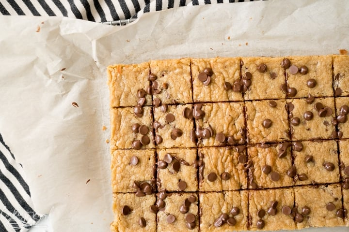

Blonde Brownies

Description
A blonde brownie is basically a brownie with vanilla used instead of
chocolate. While the flavor of brownies comes from the chocolate, the
flavor for blonde brownies comes from brown sugar mixed with the butter –
which gives them a delicious butterscotch-like flavor. For this recipe, do
not substitute margarine for the butter or your blondies will not turn out
the way they are supposed to.
For this recipe, do not substitute margarine for the butter or your
blondies will not turn out the way they are supposed to.
Ingredients
- ½ cup butter softened
- 1 cup brown sugar
- ¾ cup sugar
- 2 eggs
- 2 teaspoons vanilla
- 1½ cups flour
- 1 teaspoon baking powder
- ½ teaspoon salt
- 2 cups milk chocolate chips
- ¾ cups macadamia nuts chopped
Steps
- Heat oven to 350 degrees.
-
In a large mixing bowl cream butter, brown sugar and sugar until light
and fluffy. Add in eggs and vanilla and beat well. Gradually add in
flour, baking powder, and salt and mix well. Fold in chocolate chips,
white chips, and macadamia nuts.
- Pour into a greased 9 x 13 inch pan and spread out evenly.
-
Bake for 25 to 30 minutes. Should be golden brown. Cool and cut into
bars.
Back